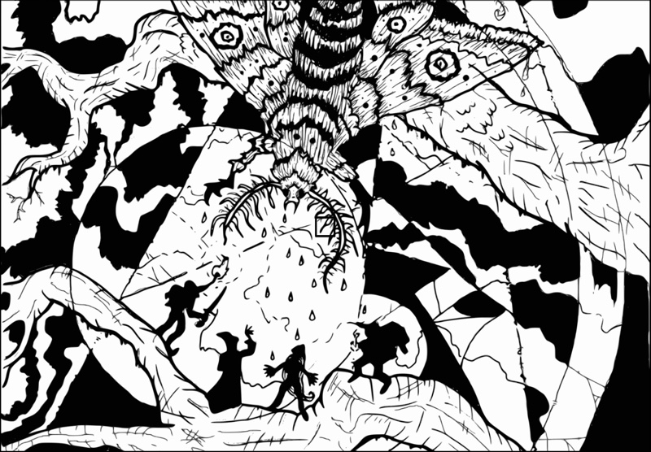

Mordite Press Presents
Torchbearer Sagas:
Roost of the Condor Queen
A Torchbearer adventure for 3-5 players

A century ago, emissaries from Puku would travel into the kingdom of Feudor, offering priceless artifacts to trade and dispensing unique insights into the profound mysteries of the Otherworld. For a hundred years they have languished in myth. Recently a lost traveler turned up with a wild tale of having found the lost city… and a map.
Now the race is on as desperate adventurers and their rivals seek to be the first to reestablish contact with the lost city of Puku, and to reap the rewards to be found in ...the Roost of the Condor Queen!
Roost of the Condor Queen

A Torchbearer adventure for 3-5 players of 1st-3rd levels.
Explore the lost city of Puku and uncover the magics of the Condor Queen.